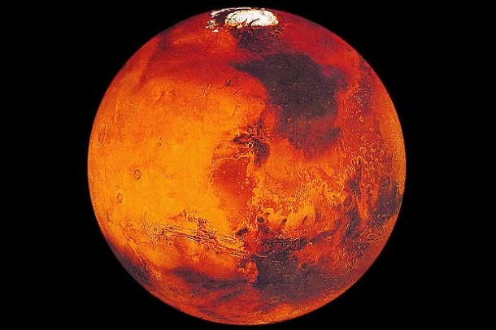

Марс четвертая планета от Солнца и последняя из планет земной группы.
Как и остальные планеты в Солнечной системе (не считая Земли) Марс назван в честь мифологической фигуры — римского бога войны.
В дополнение к его официальному названию Марс иногда называют Красной планетой, что связано с коричнево-красным цветом его поверхности.
При всем этом Марс является второй самой маленькой планетой в Солнечной системе после Меркурия.
В течение практически всего девятнадцатого века считалось, что на Марсе существует жизнь.
Причина такой веры заключается частично в ошибке, а частично в человеческом воображении.
В 1877 году астроном Джованни Скиапарелли смог наблюдать то, что, по его мнению, было прямыми линиями на поверхности Марса.
Подобно другим астрономам, когда он заметил эти полосы, то предположил, что подобная прямота связана с существованием на планете разумной жизни.
Популярной в то время версией о природе этих линий было предположение о том, что это были оросительные каналы.
Тем не менее, с развитием более мощных телескопов в начале двадцатого века астрономы смогли увидеть марсианскую поверхность более четко и определить, что эти прямые линии были всего лишь оптической иллюзией.
В результате все более ранние предположения о жизни на Марсе остались без доказательств.
Возврат на главную страницу